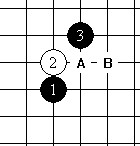
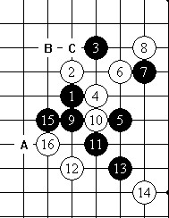
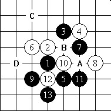
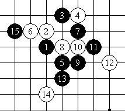

【行云专题】溪月布局二打定式讲解
#1 【行云专题】溪月布局二打定式讲解 作者：茗弈宽容 发表时间：2010-3-29 11:16:38

图1
根据“桂、连、间”（日本连珠界对根据五子棋布局形状，将26种布局归纳为三大类的称法——编者按）的顺序对定式进行讲解。溪月布局则首当其冲。
相比较而言，桂马局中执黑容易开展攻击。当然，作为一部有限的布局定式讲解资料，未知的难局必定是存在的。
布局开始，按照“1、A、B”的顺序，就是峡月局。

图2
白4的强防。黑5一打必胜点应该是下在B位，然后白6走在C位最强防，此后变化较多。
黑7是好手，白8最强防。黑17要考虑盘端问题，走A位较好。
以上可见，这个布局黑棋比较好处理，因此在日本A级赛、名人战上较少出现。
至白16后，黑必胜。——编者按

图3
白4的强防。与峡月、新月、恒星在特定场合下可以互通。如，按“10、2、3、4、1”的顺序落子布局。
黑5如走10位，白6走7位，以下黑走A、5，右边的空间比较狭小，可以考虑A点同B、C点的联系，在上面取胜。
图例的黑5选择也不错，黑7是很自然的选择。白14走A、D或其他都是黑必胜。

图4
白8的变化。白4走10，就和峡月局的组形相同。（黑15后黑必胜——编者按）
以上就是溪月的变化研究。 转自中华连珠
［此帖子已被 茗弈小刀 在 2011-1-18 15:20:53 编辑过］